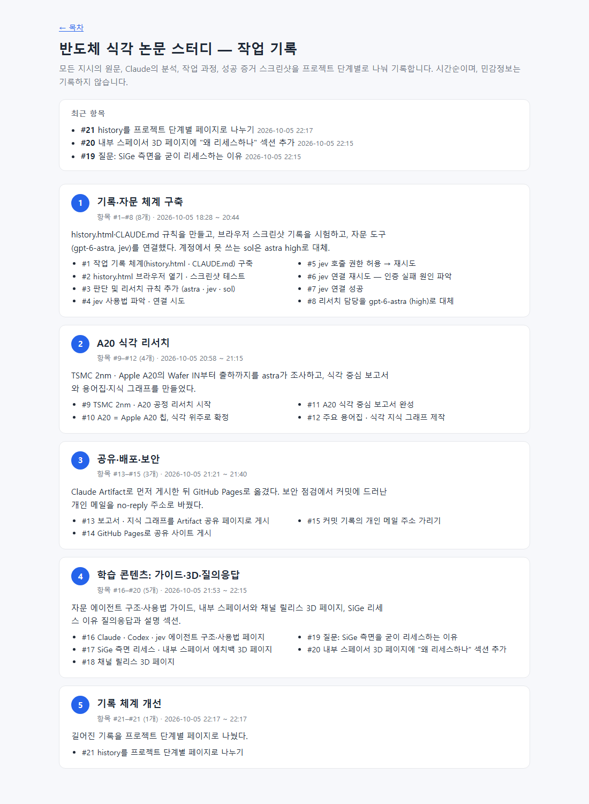
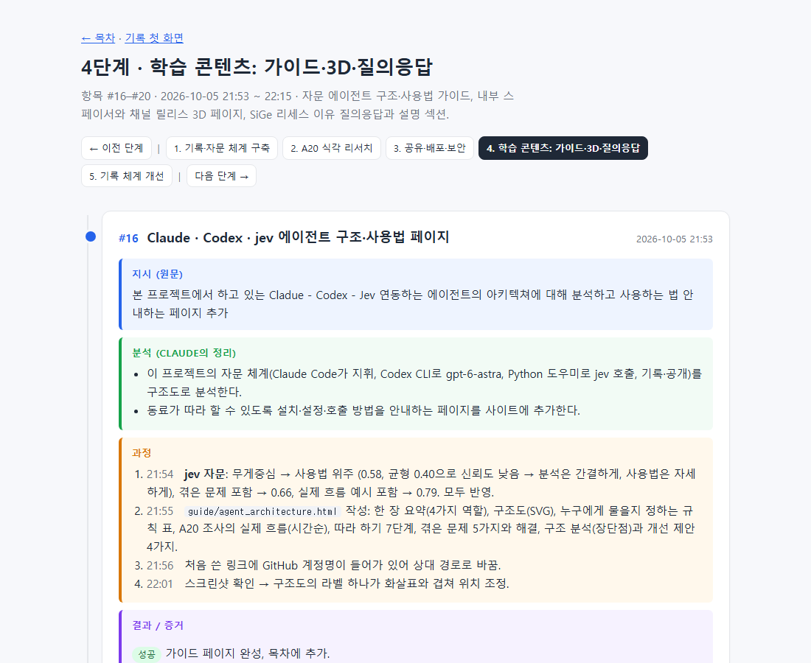

#21
history를 프로젝트 단계별 페이지로 나누기
지시 (원문)
history.html이 너무 길어진다. Pagination 필요하고, 이 프로젝트의 단계별로 항목을 나눠줘.
분석 (Claude의 정리)
- 항목 21개, 스크린샷 30여 장이 한 페이지에 있어 너무 길다. 프로젝트 단계별로 나눠 한 번에 한 단계만 보이게 한다.
- 나누는 방식과 단계 구분은 판단이 필요해 jev에게 묻는다.
과정
- jev 자문: 방식 → 단계마다 별도 파일 + history.html은 단계 목록 첫 화면 (0.78, 한 파일 탭 방식 0.22), 단계 구분 → 5단계 (0.86). 그대로 반영.
- 기존 항목 #1~#21을 다섯 단계로 나눠
history/phase-1.html~phase-5.html생성. 각 페이지 위아래에 단계 번호와 이전/다음 이동. 이미지·링크 경로를 새 위치에 맞게 수정. -
history.html을 첫 화면으로 바꿈: 단계 카드 5개(기간, 항목 범위, 요약), 최근 항목 바로가기. - CLAUDE.md의 기록 규칙을 새 구조에 맞게 수정 (새 항목은 현재 단계 파일에, 한 페이지 최대 10개, 새 단계는 새 파일).
결과 / 증거
성공 단계별 기록 페이지로 분리 완료.

